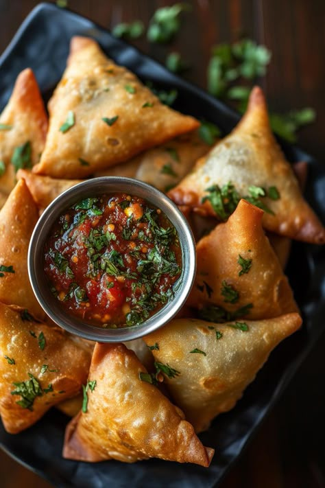

Ingredients
- 2 cups all-purpose flour (maida)
- 1/4 cup oil or ghee
- Salt to taste
- Water (for kneading)
- Oil for deep frying
- For filling:
- 3-4 boiled potatoes, mashed
- 1/2 cup green peas (boiled)
- 1 tsp cumin seeds
- 1/2 tsp mustard seeds (optional)
- 1 tsp ginger-green chili paste
- 1/2 tsp turmeric powder
- 1 tsp garam masala
- 1 tsp amchur (dry mango powder)
- Salt to taste
- Chopped coriander leaves
Instructions
- Mix flour, salt, and oil. Add water and knead into a firm dough. Rest for 20 minutes.
- Heat oil in a pan. Add cumin, mustard seeds, and sauté ginger-chili paste.
- Add potatoes, peas, and all spices. Mix well and cook for 3–4 minutes. Cool the mixture.
- Divide the dough into small balls. Roll each into an oval and cut in half.
- Form a cone with each half, fill with stuffing, and seal the edges with water.
- Heat oil and deep fry the samosas on medium heat until golden and crisp.
- Serve hot with chutneys or tea.